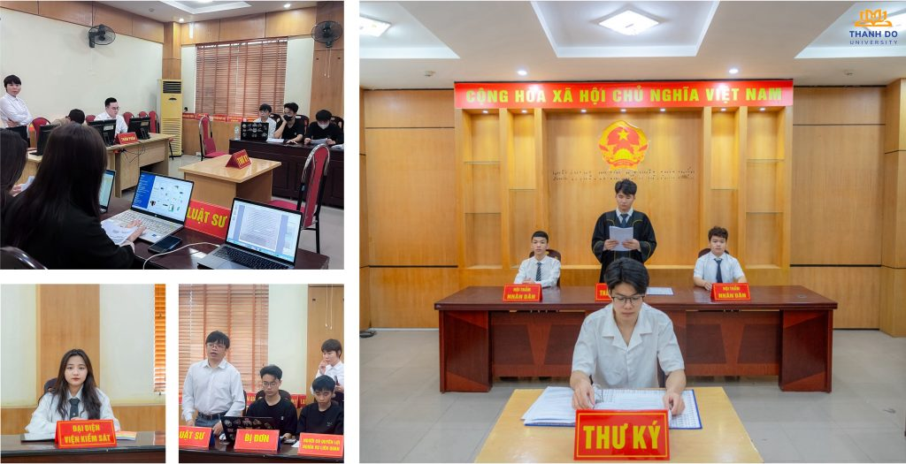

Luật
Tổng quan
Ngành Luật là một ngành khoa học pháp lý nghiên cứu về pháp luật và thực tiễn pháp lý ở Việt Nam và pháp luật quốc tế.
- Mã ngành: 7380101
- Thời gian đào tạo: Tùy thuộc vào đối tượng đầu vào (Trung cấp, Cao đẳng, Đại học)
- Trình độ đào tạo: Cử nhân
- Học phí: 370.000 đồng/1 tín chỉ
Chương trình đào tạo
Chương trình đào tạo ngành Luật tại Thành Đô University được thiết kế theo hướng ứng dụng, giúp sinh viên nắm vững kiến thức pháp luật cơ bản và kỹ năng thực hành nghề nghiệp.
- Mô tả chương trình đào tạo: Xem chi tiết tại đây
- Mỗi môn học, mỗi nhóm kiến thức đều được sắp xếp hợp lý và theo trình tự khoa học, có gắn kết với nhau. Điều này sẽ giúp bạn sau khi học thấy được sự liên kết giữa các học phần với nhau, giữa các kiến thức với nhau, từ đó am hiểu được kiến thức, kỹ năng đòi hỏi của ngành.

Triển vọng nghề nghiệp
Việc làm của sinh viên Ngành Luật – Trường ĐH Thành Đô sau khi ra tốt nghiệp:
- Làm cán bộ tư pháp; chuyên viên pháp lý và rất nhiều vị trí khác ở các cơ quan nhà nước từ cấp Trung ương đến cấp xã.
- Chuyên viên tư pháp; chuyên viên pháp lý và nhiều vị trí công việc khác thuộc các cơ quan nhà nước, bệnh viện, trường học…
- Chuyên viên pháp lý hay Pháp chế doanh nghiệp thuộc các Doanh nghiệp Nhà nước hoặc tư nhân.
- Trọng tài kinh tế; Thư ký; nhân viên thuộc Trung tâm Trọng tài kinh tế.
- Đấu giá viên; Thư ký; nhân viên tại Trung tâm Dịch vụ đấu giá tài sản hoặc Doanh nghiệp đấu giá tài sản
- Công chứng viên; nhân viên thuộc Văn phòng Công chứng Nhà nước hoặc tư nhân.
- Luật sư, Trợ lý luật sư, Thư ký luật sư, Tư vấn viên pháp lý; nhân viên tại văn phòng luật sư.
- Thẩm phán; Thư ký tòa án; Thẩm tra viên; Hòa giải viên; nhân viên Tòa án nhân dân các cấp
- Thừa phát lại; Thư ký; nhân viên thuộc Văn phòng Thừa phát lại.
- Điều tra viên; Cán bộ điều tra; nhân viên thuộc Cơ quan điều tra của Bộ Công an; Bộ Quốc phòng…
- Kiểm sát viên; Kiểm tra viên thuộc; nhân viên thuộc Viện Kiểm sát các cấp.
- Chấp hành viên; Thư ký; nhân viên thuộc Cơ quan Quản lý thi hành án dân sự; Cơ quan Thi hành án dân sự thuộc Bộ Tư pháp; Bộ Quốc phòng các cấp.
- Giảng viên Chuyên ngành Luật tại các trường Đại học; Cao đẳng…